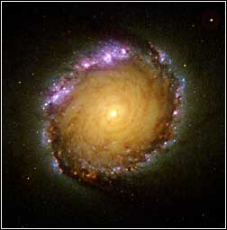

“Los hombres creen que la epilepsia es divina simplemente porque no la entienden. Pero si llaman divino a todo lo que no entienden, entonces, no habrá fin para las cosas divinas”
—Hipócrates
Hace milenios nuestros antepasados se admiraban con un misterioso disco de fuego que se erguía diariamente a través del horizonte. Éste pasaba la mayor parte del día irradiando calor sobre todas las cosas y finalmente se ocultaba tan enigmáticamente como surgía. No menos misterioso, otro disco luminoso sucedía al primero y se paseaba toda la noche allá en lo alto, rodeado de millares de puntos parpadeantes que dibujaban caprichosas formas, unas más inteligibles que otras.

¿Cuál era la explicación de todo eso? ¿Cómo se mantenían en lo alto esos objetos? ¿Qué tan lejos estaban? ¿Por qué se movían? ¿Por qué nunca se apagaban? ¿Eran simples objetos o no? Además: ¿por qué llovía? ¿Por qué caía el rayo? ¿Por qué ardía el fuego? ¿Por qué temblaba la Tierra? ¿Por qué hacía erupción el volcán? ¿De dónde venía el viento? ¿Por qué ocurría el huracán? Y también: ¿Por qué brotaban las semillas? ¿Por qué nacían los niños? ¿Por qué se fermentaban las frutas? ¿Por qué aparecían las enfermedades? Esta lista es larguísima. Y a todos esos fenómenos les atribuyeron la categoría de no ser naturales, sino de ser “algo más”, algo que no es natural, algo sobrenatural. Algo mágico. Algo digno de admiración o de temor. De reverencia o de culto. La curiosidad, la perplejidad y sobre todo la fantasía humanas ante lo incomprehensible en el mundo que nos rodea fueron el motor para la creación de seres fantásticos y poderosos que serían los responsables por todos los fenómenos que no entendemos. Así nacieron todos los dioses.
Mucho tiempo después, en nuestra sociedad moderna, el ser humano no ha cambiado mucho. Ya no se cubre con pieles de animales salvajes. Ahora usa corbata. Y es orgulloso: se auto-denomina “civilizado” para diferenciarse tajantemente de sus “primitivos” antepasados. Tomaría como un severo insulto el ser comparado a un troglodita. Sin embargo, su visión del mundo que le rodea sobrevive intacta, ya que sigue considerando todo aquello que es inexplicable -y muchas veces hasta lo explicable- como el trabajo de algún dios. Persiste en colocar apresuradamente adjetivos tales como “milagroso”, “paranormal” o “divino” en todo aquello que no entiende -o que aun no entiende- en lugar de simplemente admitir que no es capaz de entender. A pesar de todos los avances en el conocimiento de nuestro mundo, el ser humano moderno persiste en atribuir lo que aún no comprehende a algún dios, a dioses, a alguna energía especial. Esto lo vemos todos los días.
Por ejemplo, en una apartada iglesia cristiana, una multitud de fieles observa una extraña mancha formada en una pared. En ella ven fervorosamente el “rostro de Jesús”. Al otro lado del mundo, al observar el cielo nocturno un espectador se topa con una efímera luz fuera de lo común. No tarda en asignarla a “extraterrestres”. Mientras tanto, en un hospital cercano, un paciente con una severa enfermedad y con pocas probabilidades de recuperarse experimenta una súbita mejoría en su cuadro. Su médico al no poder explicar eso, se encarga de atribuirlo a un “milagro”. Fenómenos como estos son invocados diariamente como “pruebas” de la existencia de uno o más dioses.
No, el ser humano aún no se ha liberado de la mentalidad de sus ancestros. El pensamiento mágico persiste en pleno siglo XXI. De hecho, frecuentemente la actitud de explicar científicamente los fenómenos del mundo que nos rodea no es bien vista, en cuanto ésta se contrapone a las “explicaciones” espirituales, divinas, místicas, mágicas.
¿Sería la erupción de un volcán un prueba de la existencia de algún dios del fuego, que por cierto, se encontraría de muy mal humor? Hoy en día la mayoría de nosotros no tomaríamos en serio esta pregunta, pues sabemos lo que es un volcán. Sabemos que se trata de un fenómeno natural. Hace miles de años, sin embargo, ésta era una pregunta seria. Para nuestro ancestros no estaba tan claro lo que era un volcán y su actividad era un fenómeno mágico, obra de algún dios. El volcán fue un dios. ¿Qué pasó con este dios tan temible? ¿A dónde se ha ido? ¿Murió?
Es extraño que veamos con humor o hasta con desprecio las creencias primitivas, los dioses de las tribus salvajes o del mundo antiguo, pero en cambio respetemos y veneremos solemnemente al dios o a los dioses de nuestras religiones “modernas” y “civilizadas”. ¿Qué diferencia hay entre Jehová y Zeus después de todo? ¿Acaso el primero se merece más respeto que el segundo? ¿Acaso no son dos facetas del mismo pensamiento mágico?
Se dice que la ciencia no puede responder todo. Por cada pregunta que la ciencia responde, se plantean dos nuevas. Y es que entre más conocemos, más nos damos cuenta de lo que ignoramos. Tal vez no sea posible comprehender todo en el universo, sin embargo, todos los días la ciencia explica algo. Todos los días, algo ilógico se hace lógico. Todos los días un milagro deja de ser un milagro. Todos los días, algo sobrenatural se convierte en natural. Todos los días, el trabajo de un dios se convierte en obra de la naturaleza. La superstición y la religión -el mito institucionalizado- retroceden ante cada avance de la ciencia.
¿Es malo quedarnos paulatinamente sin milagros? ¿Tiene menos belleza un mundo comprehendido, explicado? Claro que no. Sólo se puede valorizar y apreciar aquello que se conoce. Conocer es, ante todo, vivir sin miedo y sin superstición. Descubrir y entender el mundo que nos rodea es una experiencia gratificante. Una foto obsequiada por el telescopio Hubble es más hermosa que mil mentiras.
Volver a la sección Escepticismo
Comentarios
Comments powered by Disqus